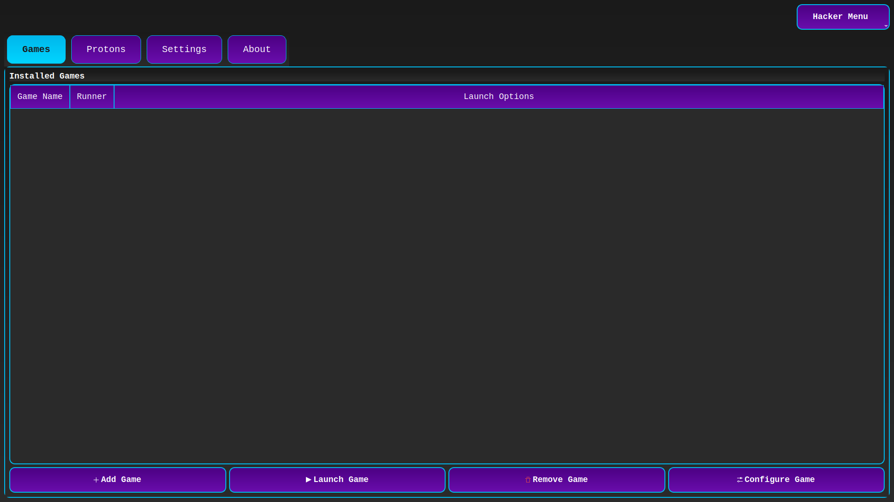

HackerOS bazuje na dystrybucji Debian Testing (niektóre edycje na Stable), wykorzystuje zwykle jądro Debiana i jest przeznaczony dla zwykłych użytkowników, graczy i entuzjastów cyberbezpieczeństwa.
Naszą misją jest stworzenie wydajnego i przyjaznego użytkownikowi środowiska do eksploracji świata technologii, bezpieczeństwa i gier.
Komendy HackerOS
- hacker update (aktualizuje snapa, apt, flatpaka, firmware) – narzędzie napisane w Go.
- hacker (manager pakietów – możesz go używać zamiast apt).
- hacker unpack (instaluje narzędzia do gier, cyberbezpieczeństwa i inne polecane narzędzia przez HackerOS).
- hacker unpack cybersecurity (instaluje narzędzia do cyberbezpieczeństwa).
- hacker unpack gaming (instaluje narzędzia do gier).
- hacker unpack gaming noroblox (instaluje narzędzia do gier bez Roblox).
- hacker unpack emulators (instaluje emulatory).
- hacker syslog (pokazuje logi systemowe).
- hacker help (pokazuje listę komend).
- hacker help-ui (pokazuje listę komend w ładnym UI).
- hacker unpack devtools (instaluje narzędzia do programowania).
- hacker unpack add-ons (instaluje dodatki polecane przez HackerOS).
- hacker unpack gs (instaluje narzędzia do gier i cyberbezpieczeństwa).
- hacker unpack xanmod (instaluje jądro XanMod).
- hacker unpack liquorix (instaluje jądro Liquorix).
- remove-current-kernel (usuwa aktualne jądro – po uruchomieniu komendy hacker unpack xanmod/liquorix użyj tej komendy. Więcej o instalacji customowych jąder dowiesz się na HackerOS Documentation).
- hlh (poznaj narzędzia CLI dla Hacker Lang).
Sesje HackerOS
Hacker Mode
Sesja do uruchamiania launcherów/gier windowsowych. Zainstaluj za pomocą: hacker unpack hacker-mode (znajdziesz również w edycji gaming).
HackerOS-TV
Sesja do oglądania filmów. Zainstaluj za pomocą: hacker unpack hackeros-tv.

Security Mode
Sesja do testów penetracyjnych. Zainstaluj za pomocą: hacker unpack security-mode (znajdziesz w edycji Cybersecurity w formie aplikacji oraz sesji).

Co oferuje HackerOS?
- Dowolny wybór jądra — jeśli nie masz specjalnych wymagań, możesz pozostać przy domyślnym jądrze Debiana lub zainstalować XanMod albo Liquorix, aby poprawić wydajność.
- Preinstalowany firmware dla lepszej kompatybilności.
- Własne gry HackerOS.
- Specjalistyczne komendy systemowe.
- Bazuje na Debianie Testing, zapewniając równowagę między aktualizacjami a stabilnością.
- Przeglądarka Vivaldi dla nowoczesnego przeglądania.
- Edycja „cybersecurity” z narzędziami do bezpieczeństwa.
- Środowisko graficzne KDE Plasma dla intuicyjnej obsługi.
- Ciągle rozwijana polska dystrybucja Linuksa.
Edycje HackerOS
Edycja Official
Edycja Official to zwykła edycja dla użytkowników, graczy, programistów – praktycznie dla każdego.
Edycja Hydra

Edycja Hydra to kopia edycji Official, ale z innym wyglądem (Garuda-like).
Edycja Cybersecurity
Edycja Cybersecurity nie posiada modyfikacji wyglądu. Jest to kopia wersji Official, ale przeznaczona dla entuzjastów cyberbezpieczeństwa (wersja Cybersecurity posiada narzędzia do testów penetracyjnych, narzędzia do cyberbezpieczeństwa, pod jądro Xen znane z systemu Qubes OS).
Edycja Gnome

Jest to to samo co edycja Official, ale ze środowiskiem graficznym GNOME.
Edycja Xfce

Jest to to samo co edycja Official, ale ze środowiskiem graficznym Xfce.
Edycja LTS
Edycja LTS to to samo co edycja Official, ale zamiast Debiana Testing używa Debiana Stable.
Gry HackerOS
The Racer
Zostań kierowcą wyścigowym. Gra napisana w Pythonie.
Starblaster
Gra inspirowana Galaxy Attack. Napisana w Rust.
Bit Jump
Gra inspirowana Geometry Dash. Napisana w Lua.
Granie na HackerOS
Granie w gry Windows na HackerOS jest możliwe dzięki narzędziu Proton (90% gier działa). Niestety, niektóre gry online, np. Fortnite, są zablokowane na Linuxie HackerOS. Więcej informacji znajdziesz na: ProtonDB, Are We Anti-Cheat Yet?.
Domyślnie używane jest jądro XanMod.
Sprawdź, jak HackerOS radzi sobie z grami: YouTube.
Narzędzia do uruchamiania gier Windows:
Języki programowania HackerOS
Język Programowania Hacker Lang
Opis składni:
- Podstawowe operatory (Prefiksy)
Każda linia zaczyna się od symbolu definiującego jej przeznaczenie:- > – Zwykła komenda systemowa.
- >> – Komenda z obsługą zmiennych.
- >>> – Komenda wykonywana jako oddzielny plik/proces.
- & – Uruchomienie komendy w tle (background).
- ^ – (Modyfikator) Dodany przed operatorem (np. ^>) wymusza użycie sudo.
- !! – Blokowy komentarz (przełącznik: włącz/wyłącz).
- \\ – Ładowanie pluginu.
- Zarządzanie zmiennymi i typowanie
Język obsługuje typy: int, bool, str, list (składnia [a,b]), dict (składnia {k:v}).- @nazwa:typ = wartość – Zmienna globalna.
- $nazwa:typ = wartość – Zmienna lokalna.
- $nazwa – Odwołanie do zmiennej wewnątrz komend lub funkcji.
- Funkcje i Biblioteki
- :nazwa(param:typ=default) – Definicja funkcji.
- : – Zakończenie bloku funkcji.
- .nazwa(argumenty) – Wywołanie funkcji.
- #prefiks:nazwa – Import bibliotek zewnętrznych:
- #rust:..., #python:..., #java:... – Biblioteki językowe.
- #bytes:... – Inne skrypty Hacker Lang (szuka pliku main.hacker).
- // – Deklaracja zależności systemowych (system deps).
- Struktury sterujące
Język mapuje specyficzne skróty na konstrukcje powłoki:- Pętle: =liczba > komenda (wykonuje komendę określoną liczbę razy).
- Warunki: ?warunek > komenda (generuje if warunek; then komenda; fi).
- Foreach: %lista > komenda (iteracja po elementach listy).
- Try-Catch: T> try C> catch F> finally (obsługa błędów wykonania).
- Konfiguracja
- [ oraz ] – Sekcja konfiguracyjna (klucz = wartość), parsująca ustawienia do słownika config_data.
Komendy/narzędzia CLI:
- hl – główne narzędzie Hacker Lang – kompiluj/uruchamiaj programy w .hk lub .hacker.
- hli – interfejs dla narzędzia hl – zainstaluj za pomocą hacker unpack hl-utils.
- hlh – informacje o narzędziach CLI + informacje o Hacker Lang.
- bytes – manager bibliotek dla Hacker Lang.

Język programowania HackerScript
Przykładowa składnia:
- Struktura i Importy
- Dyrektywy: --- automatic --- (domyślne zarządzanie pamięcią) lub --- manual ---.
- Importy: import
- import
- Zmienne i Typy
- Typowanie: Dynamiczne/Inferred (kompilator sam zgaduje typy: int, char*, Array, struct).
- Literały: tekst = "Hacker" (Stringi).
- liczba = 100 (Integery).
- lista = ["a", "b"] (Tablice).
- Interpolacja: "Wartość: {zmienna}" (Automatyczne formatowanie tekstu).
- Programowanie Obiektowe (OOP)
- Klasy: Definiowane za pomocą class Nazwa [ ... ].
- Metody: Pierwszy parametr to zawsze self.
- Tworzenie obiektów: obj = new Klasa().
- Dostęp do pól: self.pole = wartość (Działa jak struktury w C).
- Kontrola Przepływu
- Bloki kodu: Zawsze w nawiasach kwadratowych [...].
- Instrukcje warunkowe: if expr [...] else if expr [...] else [...].
- Pętle: for element in kolekcja [...] (Iteracja po tablicach).
- Funkcje i System
- Definicja: func nazwa(paramy) [ return wartość ].
- Funkcja Main: func main(args) [...] – punkt startowy programu.
- Wbudowane:
- log "msg" – Wypisywanie do konsoli.
- curl_get(url) – Żądania HTTP.
- allocate(size) / deallocate(ptr) – Zarządzanie pamięcią.
Narzędzia/komendy:
- virus – kompiluj programy napisane w .hcs do binarki (wszystkie narzędzia HackerScript możesz zainstalować za pomocą hacker unpack hackerscript).
Jakie repozytoria bibliotek obsługuje HackerScript:
- virus – zamknięte repo, zwykły użytkownik nie może dawać tu własnych bibliotek, jest to repo zarządzane przez wybranych ludzi.
- vira – otwarte repo, każdy użytkownik może tu dawać biblioteki.
- HackerScript obsługuje również biblioteki C i C++.
Jakie pliki posiada HackerOS – do konfiguracji projektu używaj pliku Virus.hcs, gdzie znajdę kod źródłowy HackerScript w /cmd, jaki format plików ma HackerScript? Posiada .hcs, co oznacza ten skrót? Hacker C Script.

Hacker Kernel
Chcesz rozwijać jądro Hacker Kernel? Zgłoś się na e-mail: hackeros068@gmail.com lub na issues lub discussions (zgłoś się, jeżeli chcesz aktywnie rozwijać ten projekt).
Czym jest Hacker Kernel? Jest to jądro wydajne, będzie posiadać optymalizacje do gier, będzie jądrem LTS stabilnym ze stabilnymi aktualizacjami. Wsparcie dla wszystkich procesorów amd64 i wszystkich GPU.